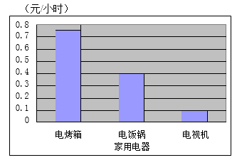
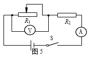
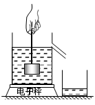

2017年北京市中考物理试题 · 选择题 第11、12、13、14、15题
11．下列实例中，用热传递的方式来改变物体内能的是
A．用热水袋暖手，手的温度升高
B．用锯条锯木板，锯条的温度升高
C．两手相互摩擦，手的温度升高
D．用手反复弯折铁丝，弯折处铁丝的温度升高
12．下列说法中正确的是
A．放大镜的镜片是凹透镜
B．照相机的镜头是 凹透镜
凹透镜
C．近视眼镜的镜片是凸透镜
D．远视眼镜的镜片是凸透镜
13．小玲家有额定电压相同的 电烤箱、电饭锅和电视机各 一个，按照每度电 0.5 元的 计费标准，将这三个用电器 正常工作 1 小时的用电费用绘制成了如图 4 所示的 柱状图。则下列四个选项 中，判断正确的是
A．在这三个用电器中，电烤箱正常工作时的电 压最高
B．在这三个用电器中，电视机正常工作时的电压最低
C．正常工作时，通过电烤箱的电流大于通过电视机的电流
D．在一个月内，小玲家电烤箱的用电费用一定比电饭锅的用电费用多


14．图 5 所示的电路中，电源两端的电压保持不变，R2 为定值电阻。闭合开关 S，在滑动 变阻器的滑片 P 向右滑动的过程中，关于电压表和电流表的示数变化，下列四个选项 中，判断正确的是A．电压表、电流表示数均变大
B．电压表、电流表示数均变小
C．电压表示数变大，电流表示数变小
D．电压表示数变小，电流表示数变大
15．为验证阿基米德原理，小明将电子秤放在水平桌面上并调零，然后将溢水杯放到电子 秤上，按实验操作规范将溢水杯中装满水，再用细线系住铝块并将其缓慢浸入溢水杯 的水中，如图 6 所示，铝块始终不与溢水杯接触。则下列四个选项中，判断正确的是

A．铝块浸没在水中静止时与铝块未浸入水中时相比，水对溢水杯底的压力变小B．铝块浸没在水中静止时与铝块未浸入水中时相比，水对溢 水杯底的压强变大
C．铝块浸没在水中静止时，绳对铝块的拉力等于铝块排开水 的重力
D．铝块浸没在水中静止时与铝块未浸入水中时相比，若电子秤示数不变，则验证了阿基米德原理